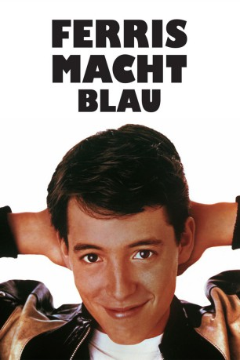

#3462 Ferris macht blau
Alternativ: Ferris Bueller's Day Off
 
 IMDB-Wertung: 7.8 / 10
IMDB-Wertung: 7.8 / 10  Metascore: 0
Metascore: 0 
An einem Frühlingstag kurz vor seiner Abschlussprüfung geht Ferris Bueller seinem riesigen Bedürfnis nach, die Schule zu schwänzen, um mit seiner Freundin und seinem besten Freund durch die Innenstadt von Chicago zu streifen, Sehenswürdigkeiten zu besichtigen, einen Tag voller Freiheit zu genießen und zu zeigen, dass das Leben mit 17 ein wenig Einfallsreichtum, etwas Mut und mit einem roten Ferrari voller Spaß sein kann!
Jahr: 1986
Dauer: 103 Minuten
FSK: 12
Land: USA Studio: Paramount PicturesTonspuren: DD2.0 - ,
Untertitel: Englisch,
Auflösung: 1080p (1920x816) Größe: 8417 MB
Genre: Komödie
Regisseur:  John Hughes
John Hughes
Drehbuch: Pierre De Clercq
Soundtrack:
Darsteller:
 Matthew Broderick als Ferris Bueller
Matthew Broderick als Ferris Bueller Alan Ruck als Cameron Frye
Alan Ruck als Cameron Frye- Mia Sara als Sloane Peterson
 Jeffrey Jones als Ed Rooney
Jeffrey Jones als Ed Rooney Jennifer Grey als Jeanie Bueller
Jennifer Grey als Jeanie Bueller Cindy Pickett als Katie Bueller
Cindy Pickett als Katie Bueller Lyman Ward als Tom Bueller
Lyman Ward als Tom Bueller Edie McClurg als Grace
Edie McClurg als Grace Charlie Sheen als Boy in Police Station
Charlie Sheen als Boy in Police Station Ben Stein als Economics Teacher
Ben Stein als Economics Teacher Del Close als English Teacher
Del Close als English Teacher Richard Edson als Garage Attendant
Richard Edson als Garage Attendant- Larry Flash Jenkins als Attendant's Co-Pilot
 Kristy Swanson als Simone Adamley
Kristy Swanson als Simone Adamley Max Perlich als Anderson
Max Perlich als Anderson Scott Coffey als Adams
Scott Coffey als Adams- Jonathan Schmock als Chez Quis Maitre D'
- Joey D. Vieira als Pizza Man
- Louie Anderson als Flower Deliveryman
- Dee Dee Rescher als Bus Driver
- Katie Barberi als Economics Student , uncredited
- John Hughes als Guy Running Between Cabs , uncredited
- Nancy Kusley als Girl , uncredited
 John Richard Petersen als Parade Spectator , uncredited
John Richard Petersen als Parade Spectator , uncredited Virginia Capers als Florence Sparrow
Virginia Capers als Florence Sparrow- Lisa Bellard als Economics Student
- Eric Saiet als Shermerite
- Jason Alderman als Shermerite
- Joey Garfield als Shermerite
- Kristin Graziano als Shermerite
- Bridgett Baron als Shermerite
- Annie Ryan als Shermerite
- Eric Edidin als Shermerite
- Brendan Baber als Shermerite
- Tiffany Chance als Shermerite
- Tom Spratley als Men's Room Attendant
- Dave Silvestri als Businessman
- Debra Montague als Girl in Pizza Joint
- Stephanie Blake als Singing Nurse
- Robert McKibbon als Balloon Man
- Paul Manzanero als Pumpkinhead
- Miranda Whittle als Girl on Trampoline
- Robert Kim als Det. Steven Lim
- Dick Sollenberger als Politician at Parade
- Bob Parkinson als Minister at Parade
- Richard Rohrbough als Minister at Parade
- Edward Le Beau als Gym Teacher
- Polly Noonan als Girl on Bus
- Kevin Bassett als Extra , uncredited
- Tim Boxell als Man on MTV , uncredited
Datei: X:\1986\Ferris macht blau (1986, FSK12, 1920x816).mkv seit 10.04.2016
Festplatte: HD 1980-1986
 Es gibt insgesamt 50 Filme in der Gruppe '1986'
Es gibt insgesamt 50 Filme in der Gruppe '1986'